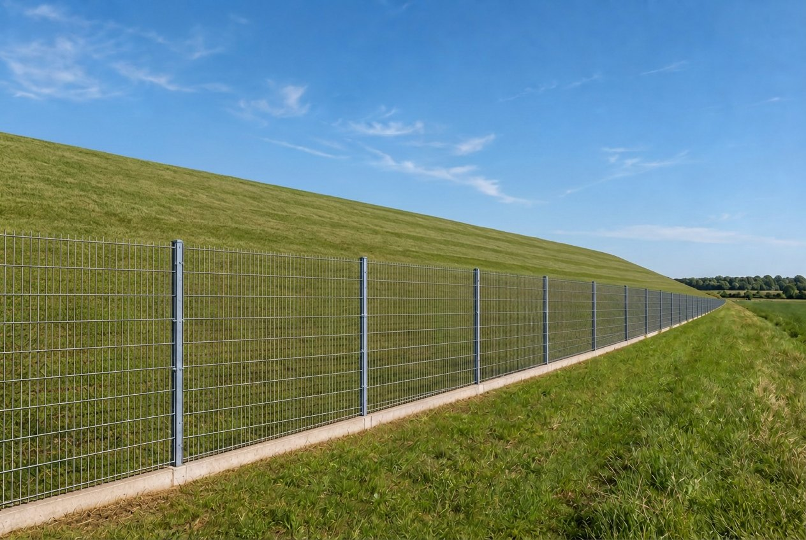
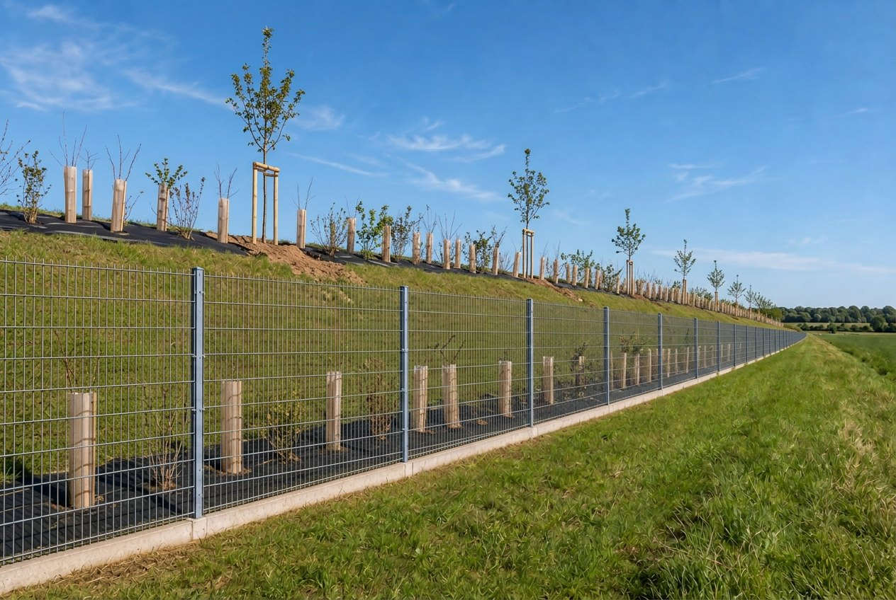
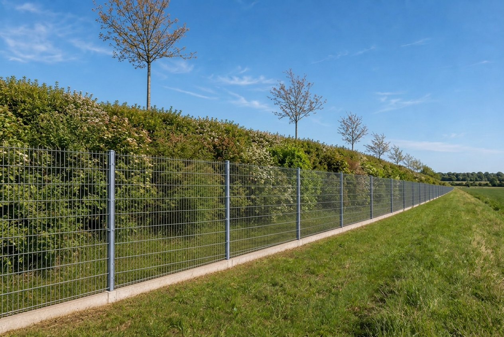
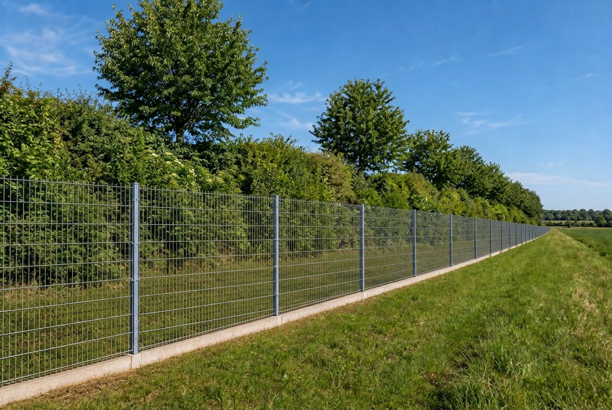

Dal prompt alla pratica Terraviva · Matteo Oliveri
Cosa porterete a casa
01
Il prompt
Scrivere una richiesta strutturata e migliorarla per iterazioni.
02
Il contesto
Costruire il contesto del vostro studio: servizi, tono, modelli, normativa.
03
Le regole
Sapere cosa non affidare all'AI e come dichiararne l'uso al cliente.
Tre capacità, non una lista di strumenti.
Da dove partiamo
Alzata di mano
?
Chi usa ChatGPT, Claude o Gemini almeno una volta a settimana?
?
Chi ha un account a pagamento?
?
Chi l'ha usato per un documento consegnato a un cliente?
Gli strumenti di cui parleremo
Claude
ChatGPT
Gemini
Gemini Notebook
Perplexity
Copilot
Le Chat
DeepSeek
Ollama
Programma
01
Capire lo strumento
15'
02
Il contesto
40'
03
Il prompt
30'
04
Casi d'uso nello studio
30'
05
Gemini Notebook
10'
06
Usare l'AI in modo corretto
15'
07
Vibe coding
10'
B
Dimostrazione dal vivo
60'
Pausa di 10' dopo il blocco 3
01
Capire lo strumento
Come ragiona un modello linguistico, dove aiuta e dove inciampa.
Una macchina che completa le frasi
«La siepe campestre è composta da specie arbustive
autoctone→disposte→su→due→file…»
Ogni parola è la più probabile dopo tutte quelle che la precedono
Quale parola viene dopo?
Probabilità di esempio, a scopo illustrativo
Conoscenza ferma a una data
Sa moltissimo, ma solo fino al suo addestramento.
Non legge la norma vigente
Se non gli date il testo o la ricerca web, cita a memoria.
Non conosce il vostro studio
Clienti, modelli, stile: finché non glieli date, non esistono.
Molte app aggiungono strumenti: ricerca web, lettura di file e immagini, calcolo. Li vediamo tra poco.
Haiku corre, Sonnet bilancia, Opus approfondisce
Haiku
Rapidità e grandi volumi
Estrazioni semplici, classificazioni, riassunti brevi e prime bozze.
Più rapido e meno costoso Più facile che perda un'eccezione
Sonnet
Equilibrio per il lavoro quotidiano
Analisi di documenti, scrittura professionale e compiti articolati.
Buon equilibrio generale Non sempre basta per i casi più sottili
Opus
Problemi difficili e più passaggi
Eccezioni, confronti complessi, pianificazione e revisioni critiche.
Maggiore capacità Di norma più lento e più costoso
Non è una classifica: è una scelta tra qualità, tempo e costo
Il motore e gli attrezzi
Il modello genera il testo; l'app gli dà gli strumenti per lavorare.
WEB
Cerca sul web
Trova la norma aggiornata e indica la fonte.
FILE
Legge i file
PDF, Word ed Excel; alcune app anche audio e video.
VISTA
Guarda le immagini
Foto di campo, planimetrie, schermate.
CALCOLO
Esegue codice
Calcoli, tabelle, grafici, file Word ed Excel.
IMMAGINI
Crea immagini
Rendering e illustrazioni: non tutte le app.
Gli attrezzi appartengono all'app e al piano, non al modello. Riducono gli errori, non li eliminano.
Un modello si sceglie su sei caratteristiche
01
Dimensione e capacità
Comprende sfumature, eccezioni e richieste con più passaggi?
02
Contesto
Quanti documenti e istruzioni può considerare nello stesso lavoro?
03
Velocità
Quanto impiega a iniziare e completare una risposta?
04
Costo e limiti
Quanto costa usarlo e quante richieste permette il piano?
05
Strumenti
Quali attrezzi offre l'app: web, file, immagini, codice? (slide precedente)
06
Dove gira
Cloud o PC locale: quali prestazioni e quale controllo sui dati?
Affidabilità: provarlo su un vostro compito reale e verificare il risultato.
Dove aiuta, dove inciampa
Bravo a…
Debole su…
Scrivere, riassumere, riformulare
Riferimenti normativi precisi
Estrarre dati da documenti lunghi
Numeri e calcoli non verificati
Confrontare testi e trovare mancanze
Informazioni recenti o locali (senza ricerca web)
Proporre strutture e alternative
Sapere quando non sa
Demo · l'allucinazione
Prompt · Llama 3 (8B) sul nostro PC, senza ricerca web
Citami tre sentenze del Consiglio di Stato che
riguardano la Valutazione di Incidenza per la
realizzazione di siepi in una ZSC. Per ciascuna
indica numero, anno e principio affermato.
PREVEDETE Quali di queste sentenze esistono davvero?
Quando non sa, spesso inventa. Con sicurezza.
Prova reale del 07/11/2026 · Ollama, nessuno strumento attivo
Demo · la stessa domanda, con la ricerca web
Claude Sonnet 5.5 · ricerca web attiva
«Non ho trovato nessuna sentenza del Consiglio di Stato che riguardi specificamente la realizzazione di siepi in una ZSC. […] Preferisco non attribuire a una sentenza un principio che non ha affermato.»
Poi propone tre sentenze sulla VIncA in generale e chiude: «Prima di citarle, controlla il testo integrale.»
PREVEDETE Questa volta esistono?
Con gli attrezzi è più prudente. La verifica resta vostra.
Prova reale del 07/11/2026 · claude.ai
L'AI propone, il tecnico verifica e firma.
Vale per norme, numeri, specie, superfici.
Quale strumento per cosa
Strumento
Punto forte per uno studio tecnico
Crea file
Cerca sul web
Legge immagini
Crea immagini
Sul PC
ChatGPT
Uso generale, immagini, agente che lavora sul computer (GPT-6 Astra)
●
●
●
●
–
Claude
Documenti lunghi, scrittura curata, file Word, Excel e PDF
●
●
●
–
–
Gemini
Google Drive e Gmail, immagini, legge anche video e audio
●
●
●
●
–
Copilot
Ricerca web con citazioni, integrato in Windows ed Edge
n.v.
●
●
●
–
Le Chat
Mistral, europeo: ricerca web con fonti, immagini
n.v.
●
●
●
–
Perplexity
Ricerca con le fonti; nel Pro sceglie tra più modelli
◐
●
n.v.
◐
–
Gemini Notebook
Risponde solo sulle fonti caricate: normativa, piani
n.v.
●
●
n.v.
–
Ollama
Modelli aperti sul vostro PC: i dati non escono
–
n.v.
●
–
●
DeepL
Traduce documenti mantenendo l'impaginazione
●
–
n.v.
–
–
noScribe
Trascrive le riunioni e separa le voci, sul PC
●
–
–
–
●
● disponibile, anche gratis con limiti · ◐ solo a pagamento · – no · n.v. non verificato Le capacità dipendono dall'app e dal piano, non dal modello · situazione al 07/11/2026
02
Il contesto
La qualità della risposta dipende da quello che gli date.
Stessa domanda, due risposte.
Cosa è cambiato? Solo il contesto.
Demo · la mail «a secco»
Prompt
Scrivi una mail a un cliente
per chiedergli dei documenti.
Risposta
Gentile Cliente, le scrivo per chiederle cortesemente di inviarci i documenti necessari. Resto a disposizione per qualsiasi chiarimento. Cordiali saluti.
PROBLEMA Corretta, ma inutile: quali documenti? Per cosa? Entro quando?
Demo · la stessa mail con il contesto
Prompt
Sono un agronomo di uno studio tecnico. Sto preparando
la Valutazione di Incidenza per l'ampliamento di un
capannone agricolo del cliente [NOME AZIENDA AGRICOLA],
vicino al sito [SITO NATURA 2000].
Scrivi una mail al titolare, che non è un tecnico,
per chiedergli:
- la planimetria di progetto in formato dwg o pdf;
- le foto recenti dell'area, soprattutto dei filari
lungo il fosso;
- il calendario previsto dei lavori.
Mi servono entro il[DATA] perché la Provincia
ci ha dato 30 giorni per le integrazioni.
Tono cordiale e diretto, frasi brevi, niente termini
tecnici non spiegati. Massimo 12 righe.
Risposta · Claude Sonnet 5.5
Oggetto: Ampliamento capannone: 3 cose che ci servono entro [DATA]
Buongiorno [Nome],
sto preparando lo studio che la Provincia richiede per l'ampliamento del capannone di [NOME AZIENDA AGRICOLA]. Serve a dimostrare che i lavori non disturbano l'area protetta vicina ([SITO NATURA 2000]).
La Provincia ci ha dato 30 giorni per completare i documenti. Mi servono quindi i seguenti materiali entro [DATA]:
1. La planimetria di progetto (il disegno dell'ampliamento), in formato DWG o PDF.
2. Alcune foto recenti dell'area, soprattutto delle file di alberi e siepi lungo il fosso. Vanno bene anche quelle scattate col cellulare.
3. Il calendario previsto dei lavori, anche di massima: quando iniziano e quanto durano.
Se qualcosa non è chiaro, mi chiami pure.
Grazie per la collaborazione e cordiali saluti,
[Nome e cognome]
Prova reale del 09/11/2026 · nessuno strumento attivo
Chi scrive · a chi · cosa · perché · entro quando · tono
Sei domande a cui il prompt deve rispondere
01
Chi sei?
L'agronomo che segue la VIncA
02
Per chi è?
Il titolare dell'azienda, non un tecnico
03
Qual è l'obiettivo?
Tre documenti entro una data
04
Con che tono?
Cordiale e diretto, frasi brevi
05
Con quali vincoli?
Massimo 12 righe, niente termini non spiegati
06
Su quali materiali?
La lettera della Provincia, allegata
La mail che ne esce
Dare i file, e perché il Markdown
Word con formattazione
Profilo dello studio
Servizi
• Valutazione di Incidenza • Progettazione del verde
Tono
Professionale, sobrio, senza enfasi.
Lo stesso testo in Markdown
# Profilo dello studio## Servizi
- Valutazione di Incidenza
- Progettazione del verde
## Tono
Professionale, sobrio, senza enfasi.
Allegare un documento è meglio che incollare il testo. Il Markdown è testo semplice: # titoli, - elenchi.
Le istruzioni personalizzate
Quello che direste in ogni chat, ditelo una volta sola.
Da incollare nelle impostazioni
Lavoro in uno studio agronomico che si occupa di Valutazione di Incidenza, VIA,
progettazione del verde e consulenza alle aziende agricole in Lombardia.
Rispondi sempre in italiano.
Usa un tono professionale e sobrio, senza enfasi e senza elenchi inutili.
Quando citi una norma indica sempre la fonte; se non sei sicuro scrivi [DA VERIFICARE].
Non inventare dati, superfici, specie o riferimenti normativi.
Se mancano informazioni necessarie, fammi una domanda prima di rispondere.
I progetti
Una «cartella» per ogni cliente o tipo di lavoro, con file e istruzioni sempre presenti.
Istruzioni
«Stai lavorando alla VIncA per… Usa la struttura delle linee guida…»
File
Relazione vigente
Richiesta di integrazioni
Planimetria
Formulario del sito
Chat
Risposta punto 1
Risposta punto 2
Lettera di accompagnamento
Esempio: progetto «VIncA — [nome cliente]»
Nella nuova esperienza, Chat e Cowork sono un unico Claude
Rilascio graduale da settembre 2026
Domanda rapida
Restate nella conversazione
Spiegare un concetto
Riformulare una mail
Confrontare due testi
Preparare una prima bozza
Compito delegato
Descrivete il risultato
Più passaggi e più file
Ricerca e uso di applicazioni
Produzione di documenti finiti
Lavoro lungo o programmato
La stessa casella di testo: Claude decide se basta rispondere o se deve organizzare ed eseguire un lavoro.
Progetto, conversazione e Artifact hanno ruoli diversi
01 · CONTENITORE
Progetto
Raccoglie istruzioni, file, memoria e attività riferiti alla stessa pratica.
USARLO · lavoro che continua nel tempo
02 · LAVORO
Conversazione
È il singolo incarico: una verifica, una lettera, un confronto o una ricerca.
USARLA · un obiettivo preciso
03 · RISULTATO
Artifact
È un prodotto autonomo, modificabile e condivisibile: documento, slide, dashboard o piccolo strumento.
USARLO · qualcosa da riaprire o consegnare
Claude Design è il laboratorio visivo degli Artifacts: mockup, prototipi, one-pager e pagine web, modificabili direttamente sulla tela e coerenti con il design system.
Un Project separa la pratica, ma non sempre tutta la memoria
Separazione operativa
Un cliente, un Project
File della sola pratica
Istruzioni dedicate
Conversazioni collegate
Memoria appresa nel Project
Separazione completa
Controllate la memoria dell'account
Se la pratica deve restare isolata anche dalle chat esterne ai Project, disattivate Use account memory nelle impostazioni del progetto.
Verificare l'opzione nel menu Memory
Regola dello studio: il confine organizzativo va configurato; il nome del Project, da solo, non è una garanzia di riservatezza.
Un connettore è un MCP già pronto da usare
MCP · lo standard
La lingua comune
Definisce come Claude può trovare dati e usare strumenti esterni. È come lo standard di una presa.
Serve conoscerlo solo per collegamenti personalizzati
Connettore · il prodotto pronto
L'adattatore installato
Collega Drive, Gmail, Slack, Microsoft 365 o altri servizi: Claude può cercare dati e, se autorizzato, compiere azioni.
Customize → Connectors · nessun terminale
Regola pratica: se il servizio è nella directory, installate il connettore; create un MCP solo per uno strumento interno o non disponibile.
Prima scegliete l'accesso; poi decidete quanta autonomia concedere
01 · STRUTTURATO
Connettore
Claude usa funzioni definite dal servizio: cercare, leggere e, se autorizzato, aggiornare dati.
PRIMA SCELTA · più affidabile e controllabile
02 · INTERFACCIA WEB
Browser
Claude opera su un sito già autenticato quando non esiste un connettore adatto.
SECONDA SCELTA · controllare ogni passaggio
03 · SCHERMO
Computer use
Claude vede schermate e controlla applicazioni desktop. È il livello più ampio e più delicato.
ULTIMA SCELTA · cartella e app dedicate
Inviare, cancellare, condividere o pubblicare: mantenete una conferma manuale prima dell'azione.
La skill insegna il metodo; il plugin prepara il kit
Skill · una procedura
«Fallo sempre così»
Istruzioni, modelli e risorse per eseguire in modo coerente un compito ripetibile.
SEGNALE State incollando per la terza volta lo stesso procedimento.
Esempio: /prepara-risposta-integrazioni
Plugin · un kit installabile
Metodo + strumenti
Riunisce skill, connettori e assistenti specializzati per un ruolo o un flusso di lavoro.
SEGNALE Il metodo va condiviso con tutto lo studio.
Esempio: plugin «Studio agronomico»
Direttamente nell'app: Customize → Skills, Plugins e Connectors.
Una skill o un plugin va valutato come un programma
01 · Provenienza
Fonte affidabile
Autore noto, documentazione leggibile e aggiornamenti tracciabili.
02 · Permessi
Accesso minimo
Solo cartelle, servizi e azioni necessari al compito.
03 · Prova
Ambiente separato
Prima esecuzione su copie e dati non sensibili.
04 · Uscita
Azione reversibile
Backup e conferma prima di invii, cancellazioni o modifiche esterne.
SEGNALI D'ALLARME Richiede credenziali, accesso molto ampio o componenti che non sapete spiegare.
Un'attività programmata è una delega che continua senza di voi
Buoni candidati
Riepilogo settimanale delle scadenze
Monitoraggio periodico di fonti ufficiali
Stato delle pratiche da dati già strutturati
Organizzazione di file in una cartella dedicata
Condizioni di sicurezza
Obiettivo e fonti ben delimitati
Output sempre riesaminabile
Nessun invio esterno automatico
Controllo delle prime esecuzioni
Automatizzate la preparazione, non la decisione: Claude può predisporre il rapporto; il tecnico lo valida e decide cosa fare.
Partite dal bisogno, non dal nome della funzione
Una domanda, una spiegazione o una prima bozza
Conversazione
La stessa pratica continua in più giornate
Progetto
Serve un risultato autonomo da modificare o condividere
Artifact · Design se è visivo
Claude deve leggere o aggiornare un servizio esterno
Connettore · MCP se personalizzato
Ripetete sempre la stessa procedura
Skill
Procedura e strumenti vanno distribuiti al gruppo
Plugin
Compito complesso? Scrivete comunque l'obiettivo nella conversazione: nella nuova esperienza Claude organizza il lavoro necessario.
Cosa legge il modello quando gli scrivete
La memoria
Comoda, ma va controllata.
Ricorda informazioni tra una chat e l'altra: una volta al mese controllatela e cancellate ciò che è sbagliato o superato.
Il profilo dello studio
profilo-studio.md
# Profilo dello studio[NOME]## Chi siamo## Servizi e ambiti## Territorio di lavoro e normativa di riferimento## Clienti tipo## Tono di voce (frasi che usiamo / che non usiamo)
## Modelli di documento (relazione, offerta, mail)
## Regole (cosa non fare mai)
Il vero punto di partenza. Si allega a ogni progetto.
03
Il prompt
Come chiedere, cosa dare, come correggere.
Prompt povero e prompt strutturato
Prompt povero
Scrivimi un paragrafo sulla
siepe di mitigazione.
Prompt strutturato
Agisci come un agronomo che scrive la relazione tecnica
di un progetto del verde.
Compito: scrivi il paragrafo "Descrizione dell'intervento
di mitigazione" per una siepe campestre lungo il confine
nord di un nuovo magazzino agricolo.
Dati:
- lunghezza 180 m, doppio filare sfalsato, sesto 1 m
sulla fila, 1,5 m tra le file;
- specie: [ELENCO SPECIE ARBUSTIVE E ARBOREE];
- obiettivo: schermatura visiva e continuità ecologica
con il fosso esistente.
Formato: un unico paragrafo di 150-200 parole,
linguaggio tecnico ma leggibile.
Non aggiungere specie o dati che non ti ho dato.
Lo schema TCCRI
Lettera
Significa
Nel prompt di S20
T
Task (compito)
«scrivi il paragrafo…»
C
Persona / ruolo
«agisci come un agronomo…»
C
Contesto
dati della siepe, obiettivo
R
Riferimenti
un paragrafo già scritto
I
Iterazione
correggere dopo il primo risultato
R · Un esempio vale più di dieci aggettivi
Scrivi con lo stesso stile di questo paragrafo,
tratto da una nostra relazione:
"""
[PARAGRAFO REALE DI UNA RELAZIONE DELLO STUDIO]
"""
A cosa serve, e cosa non deve essere
Il paragrafo deve permettere al tecnico della
Provincia di capire in 30 secondi cosa si pianta,
dove e perché.
Non deve sembrare un testo promozionale e non deve
contenere frasi generiche sulla biodiversità.
I vincoli di sicurezza
Tre frasi da mettere quasi sempre.
Non inventare dati, norme o specie che non ti ho fornito.
Se un'informazione manca, scrivi [DA COMPLETARE].
Se non sei sicuro di un riferimento, scrivi [DA VERIFICARE].
«Fammi delle domande»
Prompt
Devo preparare la relazione agronomica per
un permesso di costruire in zona agricola.
Non iniziare ancora a scrivere.
Prima fammi tutte le domande che ti servono
per fare un buon lavoro, una alla volta,
e aspetta la mia risposta.
Il modo più semplice per ottenere un prompt completo è farselo chiedere.
[ screenshot S25: le prime 3 domande del modello ]
Il primo risultato è una bozza
Accorciare
Più breve: massimo
100 parole.
Asciugare
Togli gli aggettivi e le
frasi generiche, lascia
solo le informazioni
tecniche.
Correggere un punto
Il punto 3 non è
corretto: la siepe è a
doppio filare, non a
filare singolo. Correggi
solo quel punto.
Si corregge nella stessa chat, non si ricomincia da zero.
Far ragionare prima di rispondere
Prompt · confronto tra alternative
Devo scegliere tre specie arbustive per una siepe su terreno argilloso, con ristagno
invernale, in pianura in Lombardia.
Prima proponi sei candidate, poi per ciascuna indica pro e contro rispetto
a queste condizioni, poi scegli le tre migliori spiegando il motivo.
Usa solo specie autoctone della Lombardia e segnala [DA VERIFICARE] se non sei
sicuro dell'autoctonia.
VERIFICA L'autoctonia si controlla sulle liste regionali, non sulla parola del modello.
Farsi scrivere il prompt dall'AI
Prompt
Sei un esperto di prompt. Migliora questo
prompt perché produca un risultato preciso
e utilizzabile in una relazione tecnica.
Aggiungi ruolo, contesto, formato e vincoli,
poi spiegami in 3 righe cosa hai cambiato.
Prompt da migliorare:
"Fammi una tabella delle prescrizioni
dell'autorizzazione"
Ti allego l'autorizzazione [tipo] rilasciata da [ente], atto n. [numero]. Serve per [scopo], la leggerà [destinatario]
COMPITO
Estrai tutte le prescrizioni e organizzale in una tabella
FORMATO
N. · Matrice · Prescrizione · Riferimento · Scadenza · Soggetto obbligato · Ente · Note; in fondo i «Punti da verificare»
VINCOLI
Solo dati del documento · «non specificato» se manca · solo prescrizioni vincolanti · limiti e unità come nel testo · una riga per prescrizione
Cosa ho cambiato
Ruolo e contesto: il modello calibra termini e dettaglio sull'uso nella relazione.
Formato: colonne, ordine e verifica finale, tabella riutilizzabile.
Vincoli: fedeltà al testo, meno invenzioni e imprecisioni.
Prova reale del 09/11/2026 · sintesi fedele, testo integrale negli esempi del corso
La scheda del buon prompt
Chi sono · per chi · cosa voglio · a cosa serve
Dati e file
Formato e lunghezza
Cosa non deve fare
«Se manca qualcosa, chiedimelo»
Da tenere accanto al monitor · è anche nella dispensa
Pausa
10 minuti
04
Casi d'uso nello studio
Input e output reali. Tutti i prompt sono nella dispensa.
Quattro aree di lavoro
T
Pratiche
Completezza, prescrizioni, integrazioni
T
Agronomia e verde
Specie, siepi, rendering
T
Campo
Sopralluoghi, verbali
G
Gestione dello studio
Riunioni, bandi, offerte
T2 · La relazione è completa?
Prompt · con i due file allegati
Ti allego due documenti:
1) la nostra relazione di Valutazione di Incidenza;
2) l'elenco dei contenuti richiesti dalle linee guida.
Confronta i due documenti e prepara una tabella:
contenuto richiesto | presente sì/no/in parte |
dove si trova (capitolo e pagina) | cosa manca.
Non giudicare la qualità tecnica, verifica solo
la presenza dei contenuti.
Se un contenuto è trattato solo in parte, spiega
in una riga cosa manca.
Input · relazione VIncA + Allegato F lombardo
→
[ screenshot S31: tabella con 3-4 righe «in parte» ]
Output · richiesto / presente / mancante
VERIFICA Le linee guida in ingresso devono essere quelle giuste: l'AI confronta, non sceglie la norma.
T3 · La tabella di ottemperanza
Prompt · atto anonimizzato in PDF
Dal documento allegato estrai tutte le prescrizioni.
Prepara una tabella con: n. | testo della
prescrizione (sintetico) | articolo o paragrafo
dell'atto | scadenza o frequenza | chi deve farlo |
documento da produrre.
Riporta le scadenze esattamente come sono scritte
nell'atto.
Alla fine indica quante prescrizioni hai trovato,
così posso controllare di non averne perse.
→
[ screenshot S32 ]
VERIFICA Il conteggio finale serve al tecnico per confrontare con l'atto.
T7 · Quante piante per la siepe?
Prompt
Siepe a doppio filare sfalsato, lunghezza 180 m,
sesto 1 m sulla fila.
Composizione in percentuale:
- [SPECIE A] 30%
- [SPECIE B] 25%
- [SPECIE C] 25%
- [SPECIE D] 20%
Calcola il numero di piante per specie, arrotondando
all'unità, e verifica che il totale torni.
Presenta il risultato in una tabella che posso
copiare in Excel. Mostra il calcolo.
E se lo stesso calcolo lo volessi come strumento da riusare?
Demo · calcolatore-siepe.html
Stesso calcolo, totale che torna sempre, tabella da copiare in Excel. Nato da tre righe di richiesta in italiano.
Questa è la trascrizione di una nota vocale che ho
registrato durante un sopralluogo.
Trasformala in un verbale con queste sezioni:
data e luogo | presenti | stato dei luoghi | rilievi |
criticità | azioni da fare (chi, entro quando).
Non aggiungere informazioni che non sono nella
trascrizione.
Segna [DA VERIFICARE] le parole trascritte male
o i nomi di specie dubbi.
"""
[TRASCRIZIONE]
"""
→
[ screenshot S34 ]
VERIFICA Nomi e misure.
G2 · Prima del verbale: registrare e trascrivere
01 · REGISTROCellulare al centro del tavolo, dopo aver avvisato i presenti.
02 · TRASCRIVO E SEPARO LE VOCIIl programma scrive «Speaker 1», «Speaker 2»…
03 · DO IL TESTO A CLAUDEVerbale, decisioni, attività: è la slide successiva.
Strumento
Costo
Dove lavora
Word · Trascrivi
incluso in Microsoft 365, 300 min al mese
cloud Microsoft
noScribe
gratuito, open source
sul PC
aTrain
gratuito, dal Microsoft Store
sul PC
Registratore Samsung
incluso nel telefono
sul telefono
Prompt · i nomi li date voi
Nella trascrizione allegata Speaker 1 è
[NOME, consulente] e Speaker 2 è
[NOME, tecnico comunale].
Sostituisci le etichette con i nomi.
Se un intervento non è attribuibile con
sicurezza, segnalo [DA VERIFICARE].
RISERVATEZZA Riunioni con i clienti: programmi sul PC o account aziendale, mai servizi cloud gratuiti.
G2 · Il verbale di riunione
[ trascrizione grezza della riunione del 27/09/2026 in cui è nato questo corso ]
Dalla trascrizione allegata prepara un verbale con:
argomenti, decisioni prese, attività con responsabile
e scadenza, questioni aperte.
Distingui ciò che è stato deciso da ciò che è stato
solo proposto.
→
[ screenshot S35: verbale ordinato ]
G4 · La scheda del bando
Prompt · bando regionale in PDF
Leggi il bando allegato e prepara una scheda di
una pagina con:
- chi può partecipare;
- cosa finanzia e cosa è escluso;
- contributo (percentuale, massimali);
- scadenze, con data e ora esatte;
- documenti da presentare (checklist);
- punti di attenzione.
Per ogni informazione indica l'articolo del bando.
Poi scrivi una mail breve ai nostri clienti aziende
agricole per segnalare il bando.
→
[ screenshot S36 ]
VERIFICA Scadenze e requisiti, sempre sul testo del bando.
R2 · Il rendering: l'impianto nel tempo

Prima

Impianto

5 anni

15 anni
Prompt · Gemini (Nano Banana), immagine allegata
Modifica questa immagine. Mantieni identici inquadratura, luce,
stagione, recinzione e ogni altro elemento: cambia solo la
vegetazione sulla collinetta. Non aggiungere edifici.
Siepe di ligustro, biancospino, sanguinello, pallon di maggio
e ciliegi selvatici ogni 10 m circa. Dopo 5 anni: siepe
continua alta 2-2,5 m, ciliegi alti 5-6 m.
DICHIARARE Immagine generata con AI — resa indicativa, non fotoinserimento tecnico.
Base: rendering di progetto di una siepe di mitigazione · stesso prompt, cambia solo la fase · prova reale del 09/11/2026
05
Gemini Notebook
Un assistente che legge solo i vostri documenti, e cita il punto da cui prende l'informazione. Fino a luglio 2026: NotebookLM
Il progetto prevede l'ampliamento di un capannone
agricolo e la realizzazione di una siepe a circa 300 m
dal confine del sito, in un'area agricola.
Quali misure di conservazione, divieti o obblighi dei
documenti caricati sono pertinenti per questo
intervento? Per ciascuno indica documento e articolo.
Se un aspetto non è trattato nei documenti,
dillo esplicitamente.
Fonti caricate: piano di gestione del [SITO NATURA 2000], misure di conservazione, formulario standard.
[ screenshot S39: risposta con citazioni cliccabili ]
Il mio notebook: approfondimenti da ascoltare
Notebook reale «Adattamento climatico in Lombardia» · 39 fonti
Le fonti, per gruppi
5
Piano nazionale di adattamento (PNACC)
Il piano diviso nelle sue parti:
Documento di pianoAll. I · piani regionaliAll. II · piani localiAll. III · impatti e vulnerabilità
7
DNSH
Il Vademecum diviso in quaderni, più la guida ai programmi 2021-2027:
Documento di azione, linee guida PACC, due DGR, rapporto di sintesi
2
Commissione europea
Orientamenti tecnici sulla verifica climatica
19
Un progetto reale
Studio d'impatto e 18 relazioni specialistiche
Gli audio generati · formato approfondimento
▶
Logistica clima-resiliente: guida pratica per progettare hub e DNSH in Lombardia20 fonti scelte su 39
32'
▶
Polo logistico: luci e ombre tra mitigazione, resilienza e standard europei39 fonti
21'
▶
Progetti infrastrutturali a prova di clima: dal PNRR al progetto, tra norme e realtà39 fonti
19'
▶
Resilienza climatica negli aeroporti senza verde39 fonti · un anno dopo, nuovo incarico
21'
01 · SCEGLIERETutte le fonti o solo quelle che servono
02 · CHIEDEREOverview audio → approfondimento, con il progetto nelle istruzioni
20-30 minuti di approfondimento, da ascoltare in macchina.
06
Usare l'AI in modo corretto
Dati, verifica, legge, contratto.
Cosa non caricare
Dati personali non necessari: cedolini, documenti d'identità, dati sanitari
Documenti riservati dei clienti su account personali o gratuiti
Credenziali e password
In caso di dubbio: anonimizzare (nomi, particelle, ragioni sociali)
Prima di consegnare un testo prodotto con l'AI
Le norme citate esistono e sono vigenti?
I numeri tornano con i dati di partenza?
Le specie sono corrette per il territorio (liste regionali)?
Ci sono informazioni aggiunte che non avevo fornito?
Il testo lo firmerei così com'è?
Il quadro normativo
L. 23 settembre 2025, n. 132 — art. 13
In vigore dal 10/10/2025
c. 1 — l'AI è ammessa «al solo esercizio delle attività strumentali e di supporto all'attività professionale e con prevalenza del lavoro intellettuale»
c. 2 — «le informazioni relative ai sistemi di intelligenza artificiale utilizzati dal professionista sono comunicate al soggetto destinatario della prestazione intellettuale con linguaggio chiaro, semplice ed esaustivo»
Reg. (UE) 2024/1689 (AI Act) — art. 4
Alfabetizzazione in materia di IA · applicabile dal 02/02/2025
Riscritto dal Reg. (UE) 2026/1744 (Omnibus digitale, in vigore dal 27/07/2026): chi usa l'AI adotta misure volte a sostenere lo sviluppo delle competenze, senza obbligo di garantire un livello specifico.
01La responsabilità resta del professionista
02Il cliente va informato prima, e su quali sistemi
03Formarsi e documentarlo: questo corso ne fa parte
La clausola nel contratto
Uso di strumenti di intelligenza artificiale (art. 13, L. 132/2025)
Nello svolgimento dell'incarico il Professionista può avvalersi dei seguenti sistemi di intelligenza
artificiale: [ELENCO STRUMENTI], esclusivamente con funzione di supporto all'attività professionale,
per attività quali: redazione di bozze, sintesi e confronto di documenti, controlli di completezza,
elaborazione di immagini illustrative.
Le valutazioni tecniche, le scelte progettuali e il contenuto degli elaborati restano di esclusiva
competenza e responsabilità del Professionista, che ne verifica ogni parte.
I dati del Committente sono trattati nel rispetto della normativa sulla protezione dei dati personali.
Il Committente può chiedere che determinate attività o documenti siano esclusi dall'uso di tali strumenti.
DOVE Nell'offerta o nel disciplinare d'incarico, cioè prima dell'inizio della prestazione. Da far valutare a un legale.
07
Tre cenni sul futuro: vibe coding
Oggi un tecnico può costruirsi un piccolo programma descrivendolo in italiano.
Cos'è il vibe coding
01Descrivo cosa mi serve
02L'AI scrive il codice
03Provo
04Correggo a parole
Non si diventa programmatori: si ottengono strumenti su misura per problemi precisi.
DAL VIVO
La dashboard delle piante: cosa fa
Otto fonti di specie in un'unica tabella: abaco Alberi per la città (Emilia-Romagna), ERSAF, Parco delle Groane, Parco del Ticino, guida INFC, Atlante della flora del Parco Agricolo Sud Milano, PlantEX. Si apre con un doppio clic e funziona senza connessione.
01Filtri combinati: fonte, tipo, acqua, luce, lista nera lombarda
02La scheda di una specie con i dati di tutte le fonti
03Un'incongruenza tra fonti
La dashboard delle piante: come è nata
01 · ARCHIVIOLibri e PDF. Es. l'Atlante del Parco Sud: 10 PDF, 487 pagine, molte schede come immagine
02 · MARKDOWNEstrazione del testo e OCR, controllati a blocchi di 10 schede
03 · SCRIPTUn programma legge tutti i file e prepara i dati
Il lavoro vero è portare l'archivio in un formato che l'AI sa leggere.
Gli agenti che lavorano sulle cartelle
Esempio di compito
Converti in PDF tutti i Word della cartella della pratica,
rinominali con data e titolo e fammi l'elenco
delle scadenze trovate.
RISCHIOAccesso solo a cartelle dedicate
RISCHIOBackup prima di iniziare
RISCHIOIstruzioni nascoste in siti o documenti
RISCHIOCosti dei piani
B
Adesso lavoriamo dal vivo
Caso VIncA · rendering · i vostri casi
DAL VIVO · 20'
P1 · Integrazioni VIncA, dalla PEC alla lettera
1 · Capire la richiesta
Leggi la richiesta di integrazioni della Provincia allegata. Elenca tutte le richieste numerate, riportando per ciascuna il testo esatto e, in una riga, cosa ci viene chiesto di produrre. Alla fine indica il termine per rispondere.
2 · Piano di lavoro
Per ogni richiesta indica: quali documenti del progetto contengono già le informazioni, cosa manca, e se serve una ricerca esterna (sito dell'ente, normativa, formulario del sito). Non scrivere ancora le risposte.
3 · Ricerca
Cerca sul sito della Regione Lombardia o dell'ente gestore le misure di conservazione vigenti del [SITO NATURA 2000] e indicami il documento e il link. Riporta solo fonti ufficiali.
4 · Risposte
Scrivi la risposta alla richiesta n. 1, usando solo le informazioni dei documenti allegati e della fonte trovata. Stile della nostra relazione. Dove manca un dato scrivi [DA COMPLETARE].
5 · Lettera e controllo
Prepara la lettera di accompagnamento alla Provincia con l'elenco delle integrazioni trasmesse. Poi confronta le richieste del passo 1 con le risposte scritte e dimmi se ce n'è qualcuna non coperta o coperta solo in parte.
Caso reale portato da Terraviva, anonimizzato · riserva: screenshot di ogni passo
DAL VIVO · 15'
P2 · Rendering dal vivo
R1 · Inserire la fascia di mitigazione
Nella foto allegata inserisci una fascia boscata di
mitigazione lungo il confine in primo piano:
larghezza circa 10 m, arbusti alti 2-3 m davanti e
alberi alti 8-12 m dietro, specie di latifoglie di
pianura, aspetto naturale e non geometrico.
Mantieni invariati edificio, cielo, luce e
inquadratura. Stile fotografico realistico.
Correzione 1
Gli alberi sono troppo regolari: rendi la
fascia più irregolare, con altezze diverse.
Correzione 2 · R4
Togli la recinzione in primo piano e
lascia tutto il resto uguale.
Correzione 3
Mostra la stessa vista in inverno,
con le latifoglie senza foglie.
DAL VIVO · 20'
P3 · Simulazioni insieme
01Un partecipante descrive un compito reale in due frasi
02Scrivo il prompt ragionando ad alta voce, con la scheda del buon prompt
03Il gruppo guarda il risultato e propone le correzioni
Compiti di riserva
T5 · Sintesi non tecnica
«Trasforma questo capitolo tecnico in una sintesi non tecnica per il pubblico, massimo 300 parole.»
T9 · Relazione agronomica
«Fammi le domande per scrivere una relazione agronomica per [TIPO DI PRATICA].»
G3 · Offerta da appunti
«Da questi appunti di una telefonata prepara una bozza di offerta con attività, tempi e cosa è escluso.»
L'AI ci ruberà il lavoro?
Probabilmente no. Per ora lavoriamo di più.
La scelta è lavorare meglio.
Il tempo risparmiato non sparisce: si sposta · clic su un deposito per spostarci 10 minuti
Sei consigli per non farsi sommergere
01
Prima le domande
«Prima di… fammi delle domande per capire se ne vale la pena.»
02
Selezionare, non moltiplicare
Non tutte le richieste di preventivo meritano un'offerta.
03
Eliminare, delegare, rimandare
Prima di mettere in ordine le attività della giornata.
04
Discutere i compiti ripetitivi
Serve ancora? C'è un modo diverso di ottenere lo stesso risultato?
05
Dal caso singolo al metodo
Profilo dello studio, progetti, skill: la seconda pratica parte dalla prima.
06
Meno fonti, scelte meglio
Disiscriversi, invece di farsi riassumere tutto.
L'AI propone, il tecnico verifica e firma. E decide come usare il tempo risparmiato.
Tre cose da fare domani
01
Il profilo dello studio
Scriverlo e metterlo nelle istruzioni personalizzate.
02
Un progetto
Crearne uno per una pratica in corso.
03
La checklist
Usarla su ogni testo prodotto con l'AI.
GrazieDomande?
Matteo Oliveri · matteo.oliveri@outlook.it
La dispensa del corso
mett-89.github.io/corso-ai-terraviva
Dopo il corso
Ci rivediamo per un secondo incontro: rivedremo insieme i primi prompt e i problemi incontrati.
← → scorrere · P relatore · N note · F schermo intero · R ricomincia animazione ·